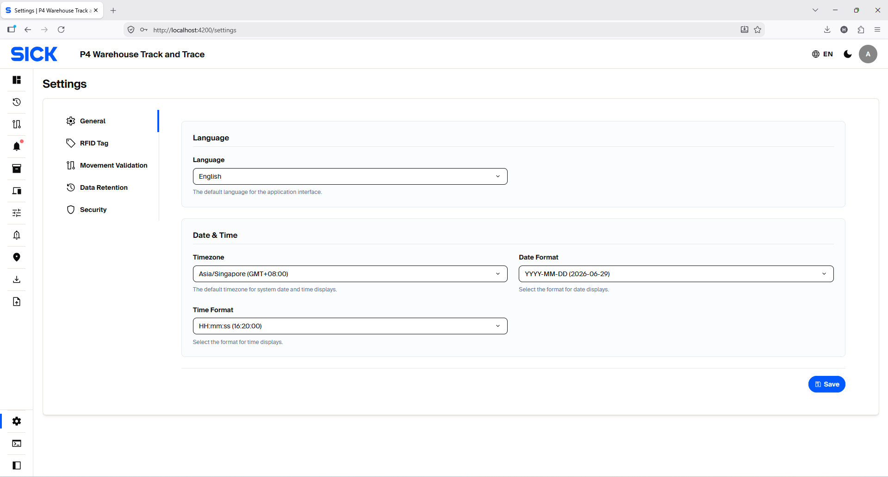
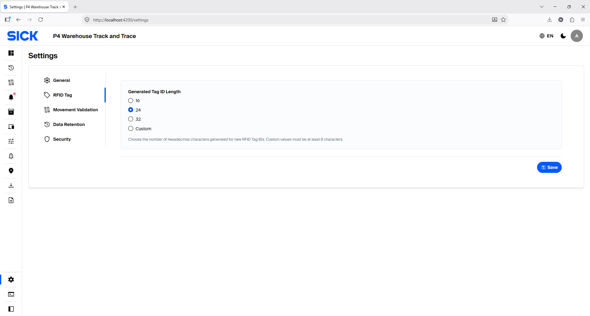
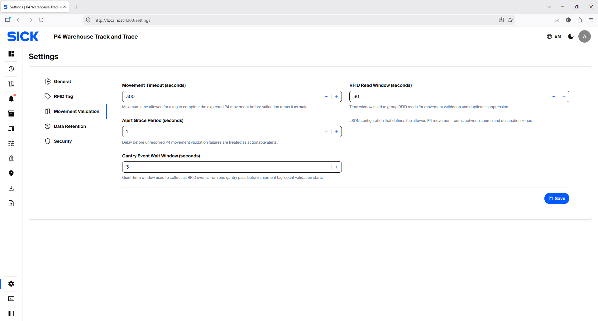
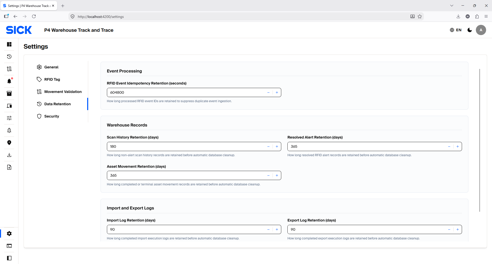

System Settings
Configure system-wide display, RFID Tag ID, movement timing, retention and password-policy settings.
Using the Settings page
Admin Web exposes five Settings sections: General, RFID Tag, Movement Validation, Data Retention and Security. Infrastructure settings that are not shown here are not normal end-user controls.
- Choose a section from the left side of the Settings panel.
- Change only the values required by the approved site configuration.
- Select Save in that section to apply the changes.
- If you try to switch sections with unsaved edits, the application can ask whether to save, discard or cancel the change.
- After changing movement or retention values, verify the related workflow with a controlled test.
General
General controls the default language and date/time display. It does not change RFID movement logic.
| Setting | Purpose | Default | Guidance |
|---|---|---|---|
| Language | Default application-interface language. | English | Choose the site default. A user's personal preferences may affect how that individual sees the interface. |
| Timezone | Default timezone used when dates/times are displayed by the system. | Asia/Singapore | Set this to the operating site's timezone so movement, scan and alert times are easy to interpret. |
| Date Format | Controls how calendar dates are shown. | YYYY-MM-DD | Choose one consistent site format to avoid ambiguous dates. |
| Time Format | Controls how time-of-day values are shown. | HH:mm:ss | Keep a consistent format across the site, especially when comparing Scan Histories and Alerts. |

RFID Tag
RFID Tag controls the length of newly generated RFID Tag IDs. Existing Asset Tag IDs are not changed.
| Setting | Purpose | Default | Guidance |
|---|---|---|---|
| Generated Tag ID Length | Number of hexadecimal characters generated for a new RFID Tag ID. | 24 characters | Presets are 16, 24 and 32 characters. A Custom value is also available and must be at least 8 characters. Keep one approved length for the deployment unless the RFID/tagging design explicitly requires a change. |

Movement Validation
Movement Validation controls timing for RFID grouping, movement timeout, Alert grace and Gantry Shipment validation.
| Setting | What it controls | Default | Effect of changing it |
|---|---|---|---|
| Movement Timeout (seconds) | Maximum allowed time for an expected movement to complete before it is treated as stale/timed out. | 3600 seconds (1 hour) | A shorter value detects incomplete movements sooner; a longer value gives more time for physical travel. A matching Movement RFID Rule can define its own timeout and override this global fallback for that movement. |
| RFID Read Window (seconds) | Window used to group RFID reads for movement validation and physical duplicate suppression. | 10 seconds | Too short can treat repeated observations as separate activity; too long can suppress legitimate repeat reads. Change only after testing with the actual reader/Gantry timing. |
| Alert Grace Period (seconds) | Additional delay before unresolved movement-validation failures become actionable alerts. | 1 second | Lower values surface alerts sooner; higher values allow more time for a valid follow-up observation. Individual Movement RFID Rules can also define their own alert-grace value. |
| Gantry Event Wait Window (seconds) | Quiet-time window used to collect RFID observations belonging to one Gantry pass before Shipment tag-count validation starts. | 3 seconds | Too short can validate before all tags are received; too long delays the result. Tune only after observing real Gantry timing. |

Data Retention
Data Retention controls automatic cleanup. Longer retention keeps more history but uses more database storage; shorter retention removes old records sooner.
Event Processing
| Setting | Purpose | Default |
|---|---|---|
| RFID Event Idempotency Retention (seconds) | Keeps processed RFID event IDs long enough for the system to recognize redelivery of the same logical event and suppress duplicate event processing. | 604800 seconds (7 days) |
Warehouse Records
| Setting | Purpose | Default |
|---|---|---|
| Scan History Retention (days) | Retention period for non-alert Scan History records before automatic cleanup. | 730 days (2 years) |
| Resolved Alert Retention (days) | Retention period for resolved RFID Alert records. | 365 days (1 year) |
| Asset Movement Retention (days) | Retention period for completed/terminal Asset Movement records. | 365 days (1 year) |
Import and Export Logs
| Setting | Purpose | Default |
|---|---|---|
| Import Log Retention (days) | Retention period for completed import execution logs. | 90 days (3 months) |
| Export Log Retention (days) | Retention period for completed export execution logs. | 90 days (3 months) |

Before you change settings
- Record the current approved value before editing.
- Confirm the reason for the change and which workflow it affects.
- Change only one related group of settings at a time.
- Select Save and confirm that the page accepts the new value.
- Run a controlled verification: generated tag for RFID Tag changes, movement test for timing changes, or login/password-change test for Security changes.
- For retention changes, confirm reporting and traceability requirements before allowing cleanup to remove older records.